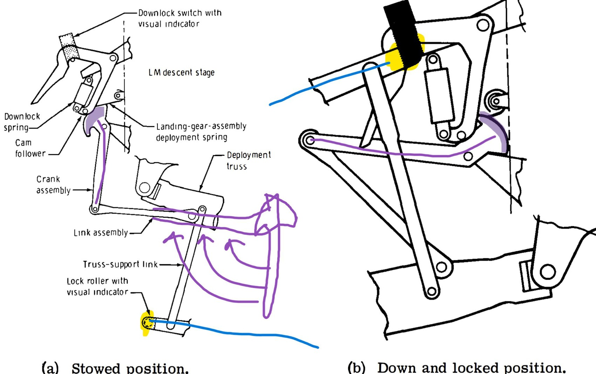
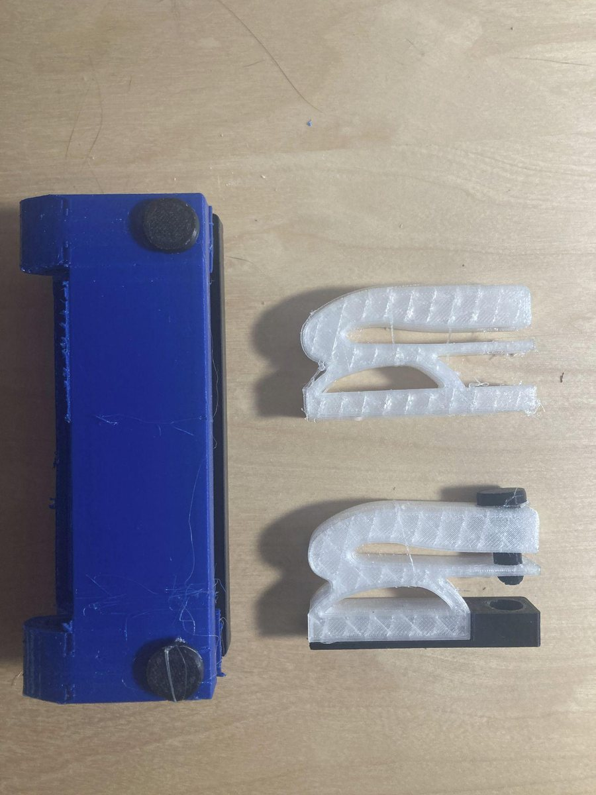
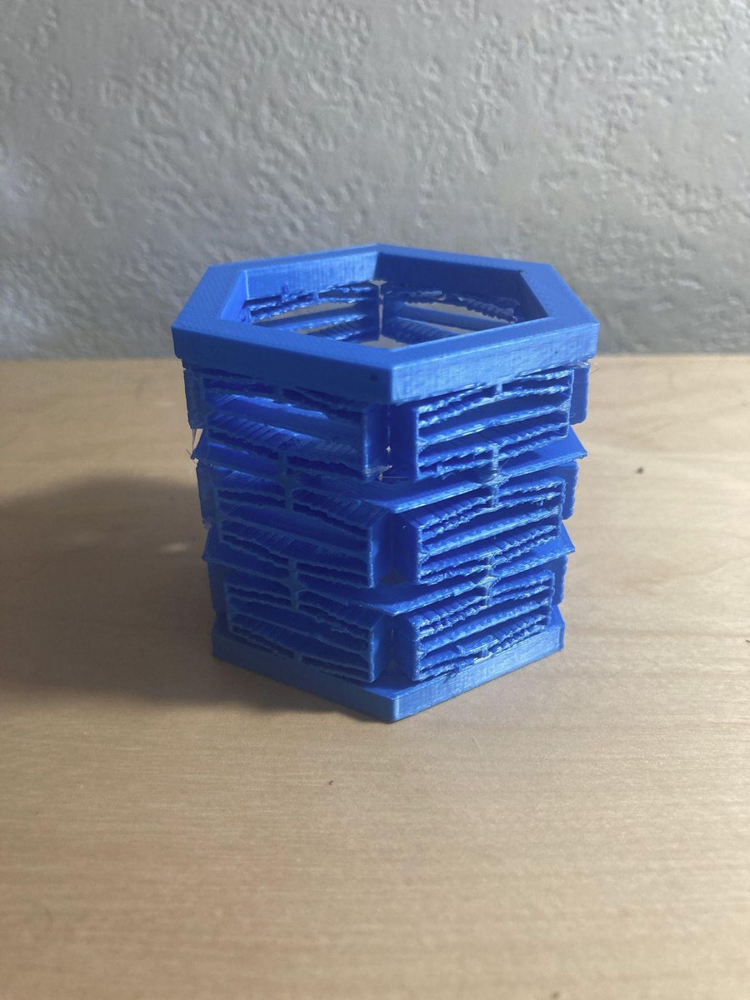
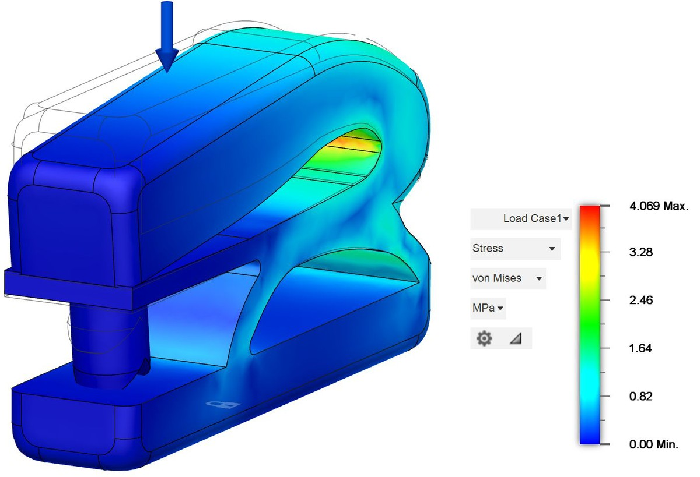
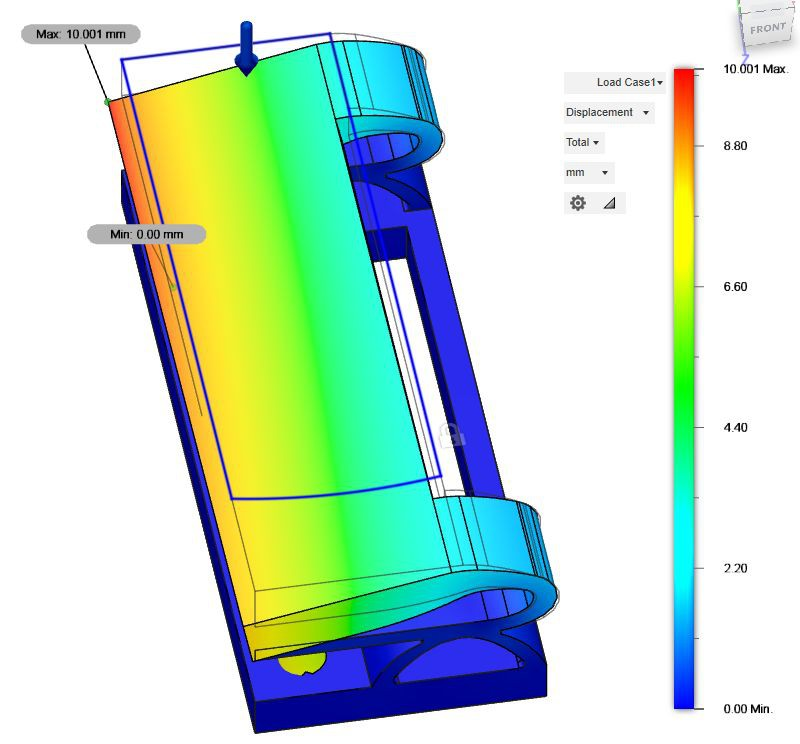
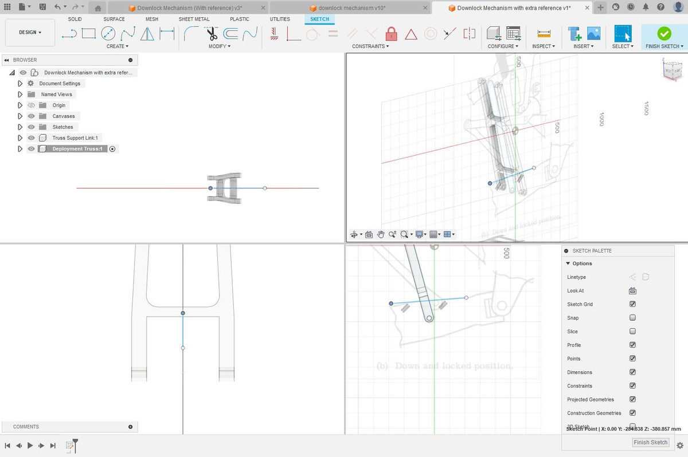

04 / 04 · Alameda County (ACSEF) and California State (CSEF) Science Fairs
Photos

Annotations done on schematics of the Apollo downlock mechanism in the early stages of design.

Compliant two-hole and one-hole punchers printed out of TPU and PLA.

Negative stiffness honeycomb printed out of PLA.

One-hole and two-hole compliant punchers each under 20 N load. Material simulated was TPU.

Displacement result from the same load case, reading 10.001 mm of maximum travel.

We first traced sketches off of reference images at various angles to reproduce the Apollo Lunar Lander downlock mechanism to the best of our ability, due to the lack of documentation.